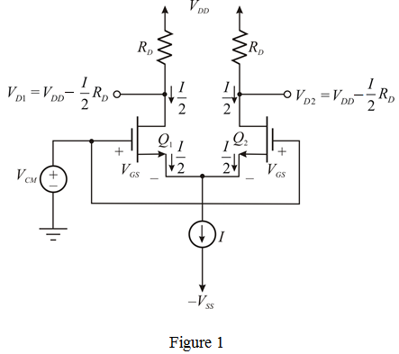

Step 1:
Draw the MOS differential amplifier circuit.

Step 2:
Calculate the bias current I.
The differential voltage gain, .
The common-more dc output voltage, .
The process trans-conductance parameter for npn transistor , .
The supply power, .
The supply voltages are: .
Substitute corresponding values.
Therefore, the value of bias current,  is
is  .
.
Step 3:
Calculate the drain resistance, .
Substitute for ,  for , and for
for , and for  .
.
Therefore, the drain resistance,  is .
is .
Step 4:
Write the formula for drain current.
Calculate the channel width-to-length ratio,  .
.

Step 5:
Simplify the expression further.
Substitute for, for, for and for  in the equation.
in the equation.
Therefore, the width-to-length ratio,  is .
is .